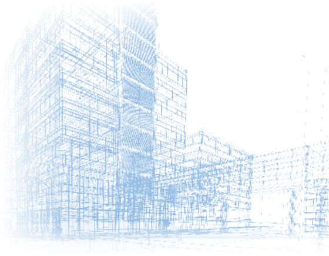

Infrastructures

Bureau d'études thermique & fluides — Tunis · Paris
Chauffage, ventilation, climatisation, plomberie, salles propres et fluides spéciaux : ProFlux conçoit et pilote vos installations, de l'esquisse à la réception de chantier.
Devis gratuit et sans engagement Réponse sous 48 h ouvrées Un interlocuteur technique unique
Le bureau
ProFlux est un bureau d'études spécialisé dans l'ingénierie thermique et les fluides, fondé à Tunis en 2010 par un ingénieur CVC. Nous accompagnons maîtres d'ouvrage, architectes et entreprises générales en France, en Tunisie et à l'international.
Du chiffrage à la synthèse d'exécution, nous prenons en charge l'intégralité du cycle d'un projet — APS, APD, DCE, EXE et SYN — avec une exigence simple : tenir les budgets et les délais sans jamais transiger sur la conformité réglementaire.
Ingénieurs et techniciens travaillent en réseau sur les mêmes outils de CAO et de calcul, ce qui garantit la cohérence des études entre les lots CVC, plomberie, désenfumage et fluides spéciaux, quel que soit le pays d'intervention.
Découvrir le bureau et son dirigeantDomaines d'intervention
Une même équipe, un même référentiel de calcul : les arbitrages entre lots se prennent en conception, pas sur le chantier.
Notre spécialité : conception selon ISO 14644-1
Maquette numérique, coordination des corps d'état
Chaudières, sous-stations, réseaux de chaleur urbains
CVC, désenfumage, confort thermique
Eau froide, eau chaude sanitaire, eaux usées
Production d'ECS solaire, dimensionnement TECSOL
Bassins, hammams, spas, thalassothérapie
RIA & sprinkler — NF, APSAD, NFPA
RE2020, RT2012, DPE, gains et déperditions
Équilibrage hydraulique et aéraulique
Points fixes, guidages, compensateurs
Rétention, débit de fuite, collecteurs
Une expertise à part entière
Le chiffrage fait partie intégrante de nos expertises. L'ingénieur qui dimensionne l'installation est celui qui la quantifie.
Les quantités ne sortent pas d'un ratio au mètre carré, mais du réseau réellement conçu : linéaires de gaines et de tuyauteries, puissances installées, nombre de terminaux, équipements de chaufferie. Un écart de dimensionnement se voit donc dans le prix avant le lancement de la consultation — et non à l'ouverture des offres.
Nous chiffrons dès l'APS, avec une précision croissante jusqu'au DCE, puis nous accompagnons la maîtrise d'ouvrage dans l'analyse technique et financière des offres d'entreprises.
Méthodologie
Mission complète ou intervention sur une phase précise : le même ingénieur suit le dossier du principe technique à la synthèse.
Faisabilité, principes techniques, premières estimations
Dimensionnement et choix techniques argumentés
CCTP, DQE, DPGF et pièces marché
Plans et notes de calcul détaillés
Coordination de tous les corps d'état techniques
Réalisations
De la piscine collective à l'aéroport international : une sélection de projets conçus et pilotés par ProFlux.


Pourquoi ProFlux
Chiffrage réaliste dès l'APS et suivi des coûts jusqu'à la réception.
RE2020, RT2012, ISO 14644-1, NF, APSAD, NFPA : des études justifiées et documentées.
La direction technique suit personnellement chaque dossier, de l'étude au chantier.
Nos terrains d'intervention
Parlons de votre prochain projet
Envoyez-nous le programme, les plans ou le CCTP : nous revenons vers vous sous 48 h ouvrées avec une proposition d'intervention.